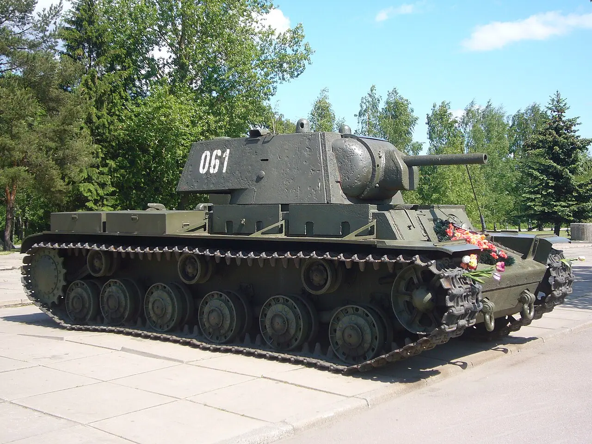

| KV-1 | |
|---|---|
|
 |
Datos generalesPaís: Unión Soviética Año: 1939 Tripulación: 5 |
EspecificacionesPeso: 45 toneladas Motor: V-2K, diésel V12, 600 hp Velocidad máxima: 35 km/h |
|
ArmamentoCañón principal: F-32 de 76,2 mm Ametralladoras: 3 × DT de 7,62 mm Municion empleada
|
|
El KV-1 fue un tanque pesado desarrollado por la Unión Soviética durante los años previos a la Segunda Guerra Mundial. Su nombre proviene de Kliment Voroshílov, un destacado dirigente militar soviético de la época. El vehículo fue diseñado para proporcionar una combinación de blindaje pesado y potencia de fuego superior a la de los tanques medios contemporáneos.
El desarrollo del KV comenzó a finales de la década de 1930, cuando la Unión Soviética buscaba un nuevo tanque pesado capaz de superar las defensas fortificadas y enfrentarse a vehículos blindados enemigos. El KV-1 incorporó un blindaje considerable para su época y utilizó el motor diésel V-2 como sistema de propulsión.
Cuando entró en servicio, el KV-1 poseía un nivel de protección que podía resistir numerosos cañones antitanque empleados por otros ejércitos. Esta característica le proporcionó una ventaja importante durante los primeros años de la Segunda Guerra Mundial.
La producción del KV-1 comenzó en 1939 y estuvo principalmente relacionada con la Fábrica Kírov de Leningrado. Después de la invasión alemana de la Unión Soviética, parte de la producción fue trasladada a la Fábrica de Tractores de Cheliábinsk, en los Urales, que posteriormente se convirtió en uno de los principales centros de fabricación de tanques soviéticos.
Se produjeron varios miles de unidades de la familia KV entre 1939 y 1943. Durante este periodo se introdujeron diferentes modificaciones destinadas a mejorar el armamento, la protección, la movilidad y la facilidad de fabricación.
El KV-1 tuvo sus primeras experiencias de combate durante la Guerra de Invierno contra Finlandia entre 1939 y 1940. La experiencia obtenida durante este conflicto ayudó a los diseñadores soviéticos a identificar las ventajas y problemas del nuevo tanque pesado.
Su participación más importante comenzó en 1941 durante la Operación Barbarroja. Durante las primeras semanas de la invasión alemana, algunos KV-1 consiguieron retrasar el avance de las fuerzas alemanas gracias a su pesado blindaje y armamento.
El KV-1 participó en numerosas operaciones durante la guerra: